Se votaba la ponencia del señor Rato España en un mundo global y una sola cartulina se alzó con el no.
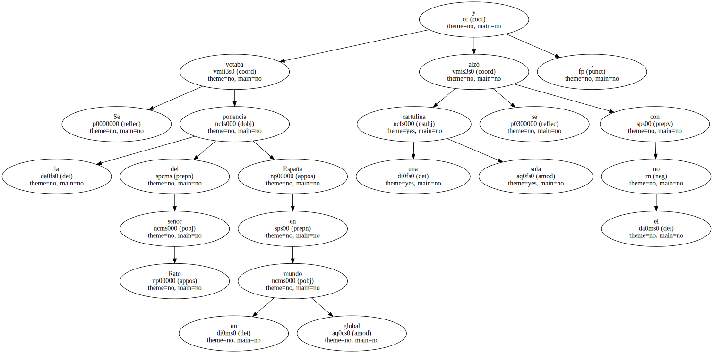En un congreso de tanta unanimidad , el compromisario que se atrevió solitariamente a votar en contra de la ponencia del señor Rato es una pieza de considerable valor.
Si es que no se hizo un lío con las cartulinas y sabía de verdad lo que votaba , conviene que le mantengan bien conservado en su postura civilizadamente rebelde.
Si el dinero , que todo lo corrompe , no le tuviera que hacer perder su virginal disidencia actual , merecería estar subvencionado.
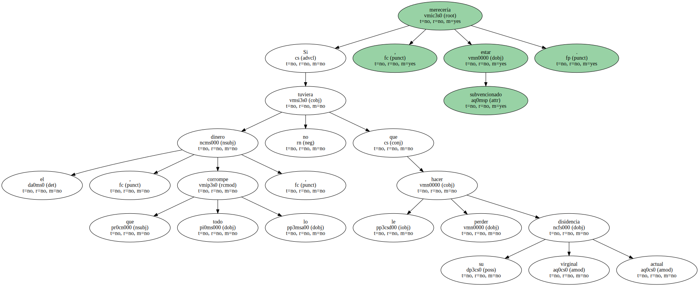La discrepancia dentro de un orden es un lujo de los partidos que intentan la convivencia en su seno de lo que se llaman diferentes sensibilidades.
Rompen la monotonía de una militancia clónica , hecha a imagen y semejanza del líder.

Si a la izquierda le conviene siempre exhibir a algún empresario , en todos los partidos de la derecha , aunque se reconviertan al centro , ha de haber un obrero , un discrepante y , a poder ser , un negro.
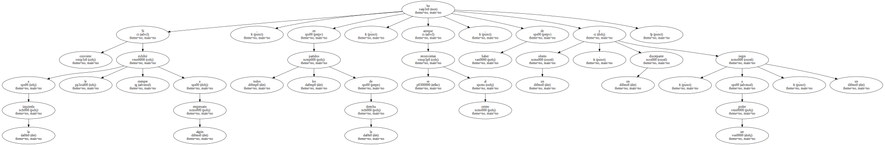Son un adorno difícil de alcanzar.
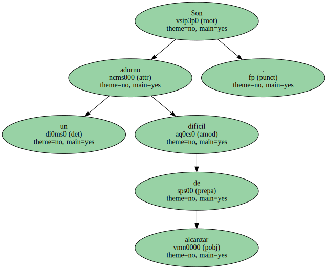Cuando se consigue , la dirección queda muy acreditada.
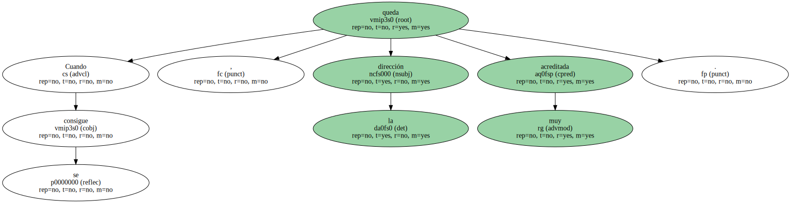Que nadie crea que en el PP siguen prietas las filas.
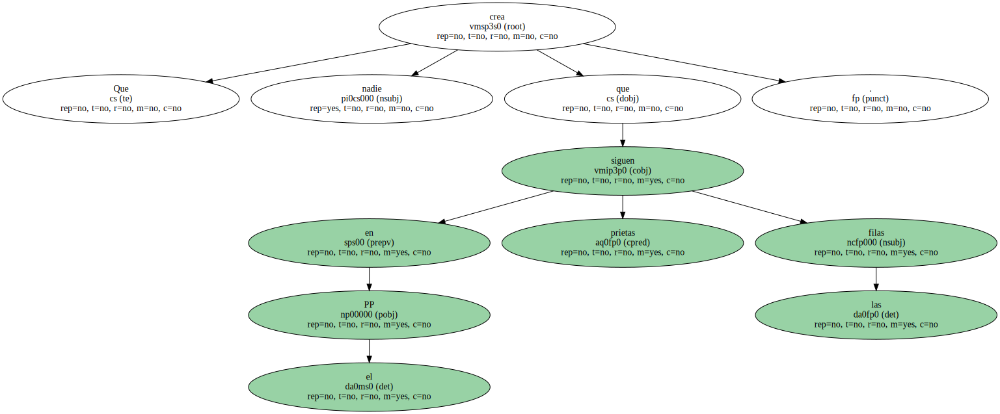Ahí está el discrepante del señor superministro de la cosa económica , al que pueden exhibir en público.
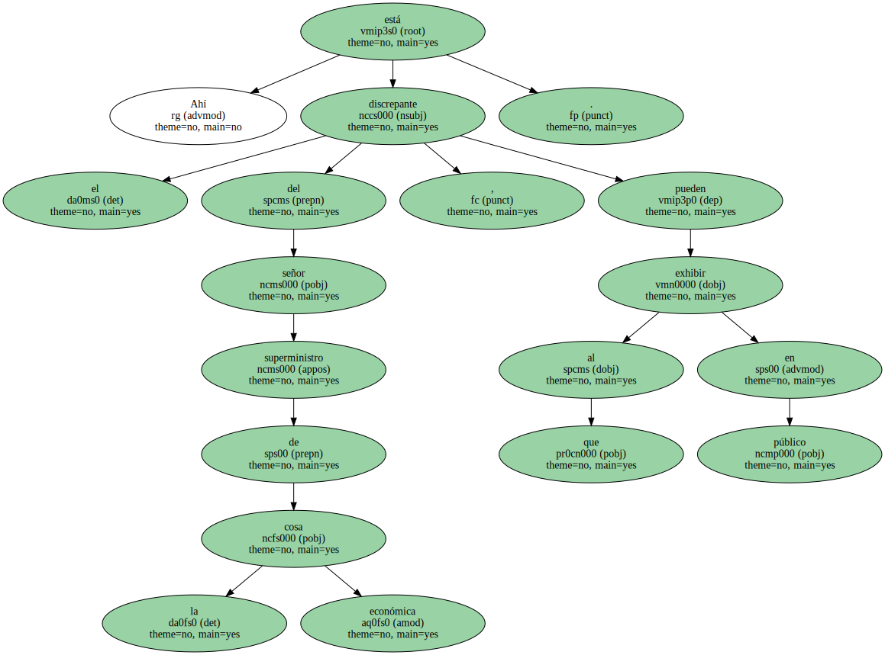Su nombre no ha trascendido y seguramente ahora hay mucha curiosidad en las propias filas del PP por conocer a un tipo tan original y de tanto valor.
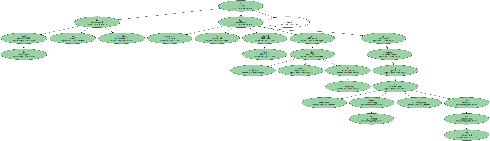" Aquí , la ministra de Medio Ambiente , aquí , el discrepante ".
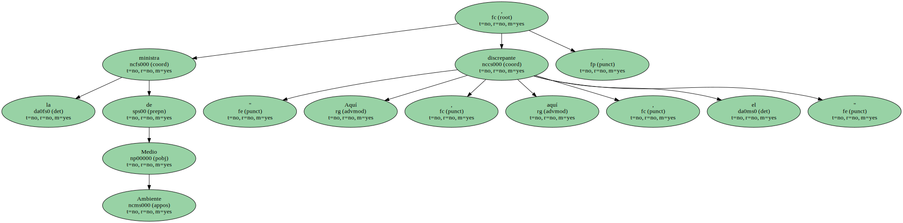Seguro que el señor Rato se muere de ganas de abrazarle , si es que no lo ha hecho ya.
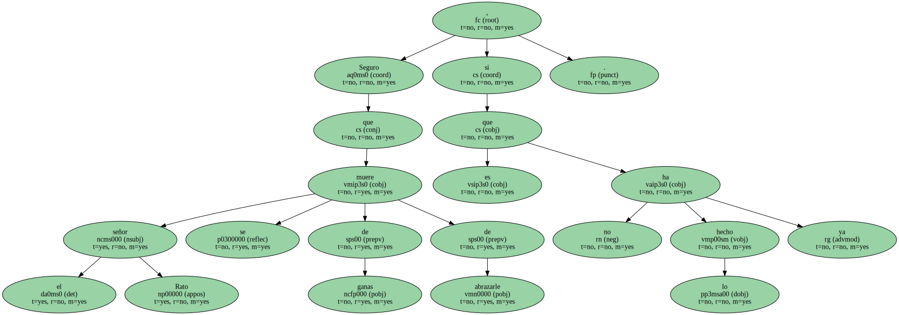Una nota aparentemente discordante hace más creíble ahora el viaje al centro.
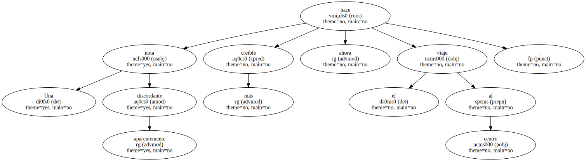Significa que ha sido una operación muy preparada.
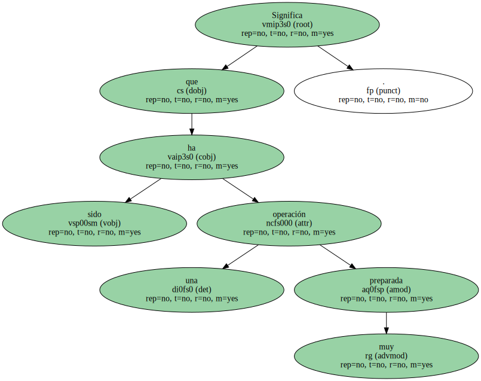Las unanimidades ya no están bien vistas en los partidos políticos y en nombre del respeto , que ha de imperar siempre en democracia , conviene que las minorías estén representadas.
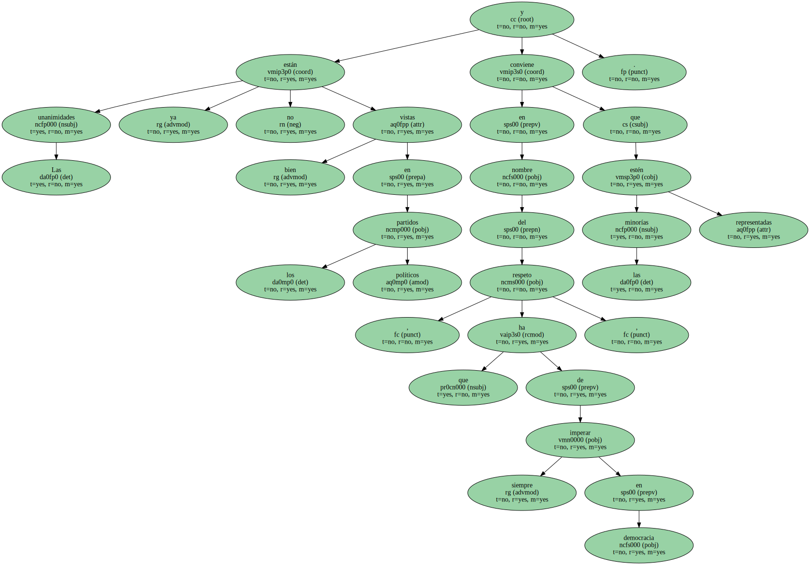Es el papel que le toca desempeñar al discrepante , al que el señor Aznar habrá dado ya las gracias.
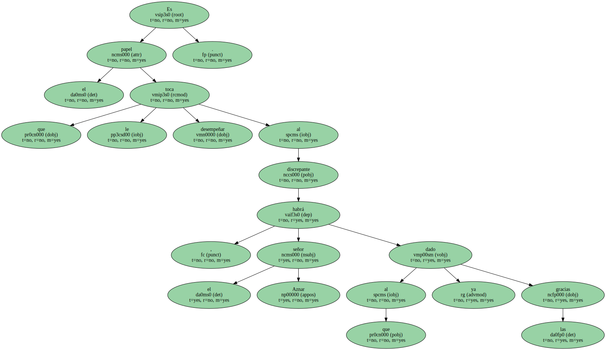